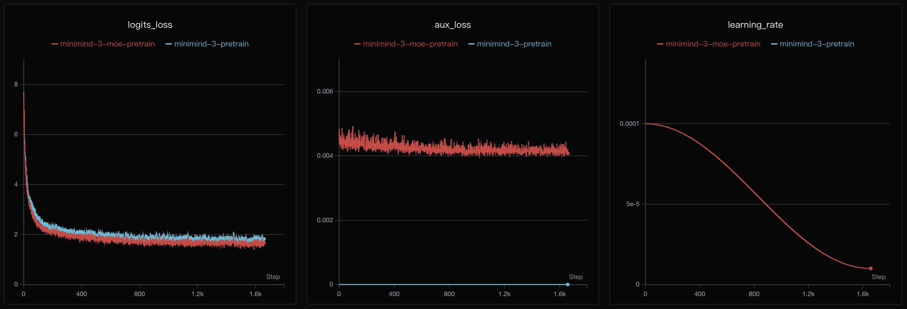

第 09 章 · 训练
预训练 Pretrain
预训练就是让模型在几十亿 token 上反复做“完形填空”：给定前面的词，预测下一个词。任务极简，但正是它让模型吸收了语言的全部规律。
1. 训练循环的五个动作
for input_ids, labels in loader:
with autocast(): # 1. 混合精度前向
res = model(input_ids, labels=labels)
loss = (res.loss + res.aux_loss) / accumulation_steps
scaler.scale(loss).backward() # 2. 反向传播
scaler.unscale_(optimizer)
clip_grad_norm_(model.parameters(), 1.0) # 3. 梯度裁剪
scaler.step(optimizer); scaler.update() # 4. 更新参数
optimizer.zero_grad(set_to_none=True) # 5. 清空梯度2. 动画：一轮训练在做什么
动画前向 → 损失 → 反向 → 更新
3. 动画：学习率余弦衰减
MiniMind 的学习率不是恒定的。它从 lr 开始，按余弦曲线平滑降到 0.1·lr：
lr_t = lr · ( 0.1 + 0.45 · (1 + cos(π · step / total)) )交互动画余弦学习率调度

✅ 动手提示
Notebook 里先带你练 optim.AdamW、GradScaler、
torch.nn.utils.clip_grad_norm_、torch.cuda.amp.autocast，
再留白让你写出完整的 train_epoch 训练循环。注意：梯度累积时 loss 要先除以累积步数再 backward。